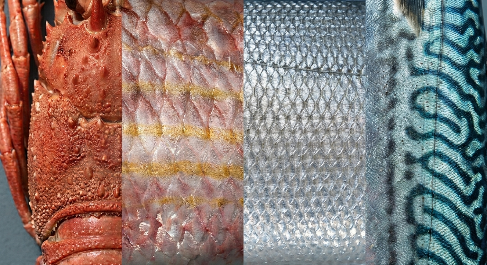

La Maison
Choisir, calibrer, garantir
MARENOSTRUM n'est ni un fournisseur généraliste ni un catalogue : une maison qui retient peu de pièces, les calibre avec rigueur, et en garantit la régularité, commande après commande.
Le constat
Chaque intermédiaire coûte un jour
Le circuit classique empile les étapes — chacune ajoute un délai, un coût, et dilue un peu plus l'exigence sur le produit.

Notre parti pris
Une signature, pas une provenance
Nous sélectionnons directement producteurs et mareyeurs, sans intermédiaire superflu — mais ce n'est pas l'origine qui nous engage, c'est notre validation.
Chaque lot est examiné par notre responsable sélection selon un cahier des charges strict — calibre, régularité, texture. Ce qui ne le satisfait pas n'entre jamais dans notre collection.
- Sélection
- Lot par lot, validée avant intégration
- Calibrage
- Un standard constant, jamais approximatif
- Livraison
- Réfrigérée, 24-48h
- Garantie
- La maison répond de chaque pièce
Le caviar
La même exigence, portée plus loin
Le caviar reste notre exception : un produit qui ne pardonne aucune approximation, sur le calibrage comme sur la garantie. Espèces, formats et disponibilités se retrouvent dans La Table.
Découvrir La Table →
Ce qui ne se négocie pas
Sélection, calibrage, garantie
Sélection
Un lot qui ne répond pas à notre cahier des charges n'entre jamais dans notre collection.
Calibrage
Un standard constant, d'une commande à l'autre, quelle que soit la saison.
Garantie
La maison répond de chaque pièce qui porte son nom — sans exception.
Vous représentez un établissement ?